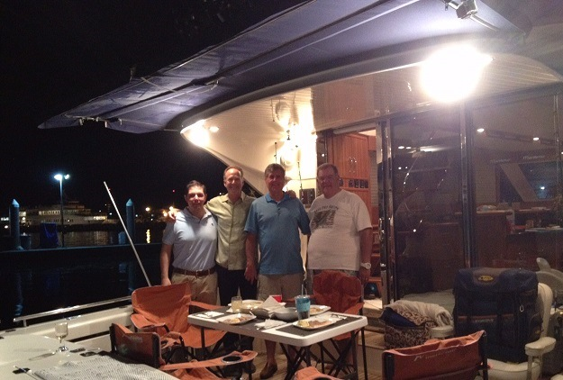

Todo listo para el “Primer Torneo de Pesca Big Fish”
El pasado 25 de Octubre se realizó el Torneo, “Bisbee’s Black & Blue Tournament” en Cabo San Lucas. En el cual el Equipo Mobius de Acapulco México salió victorioso en la categoría Catch & Release. (en foto)
¡Felicitaciones!
Aquí te mostramos algunas fotos del torneo.

¡Buena Pesca!